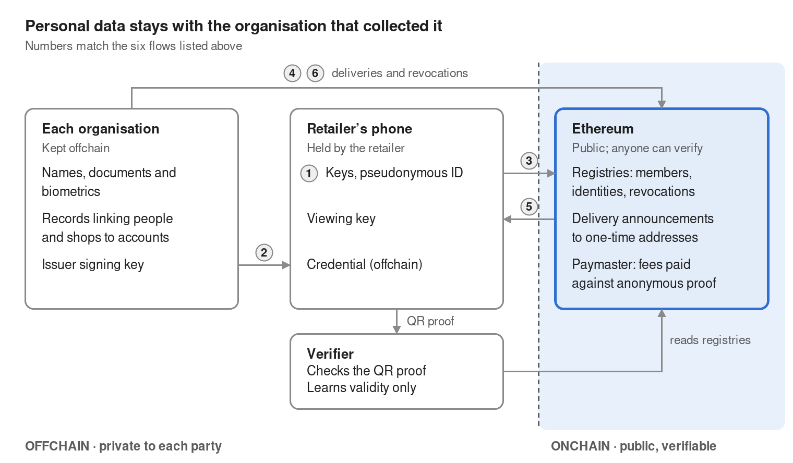
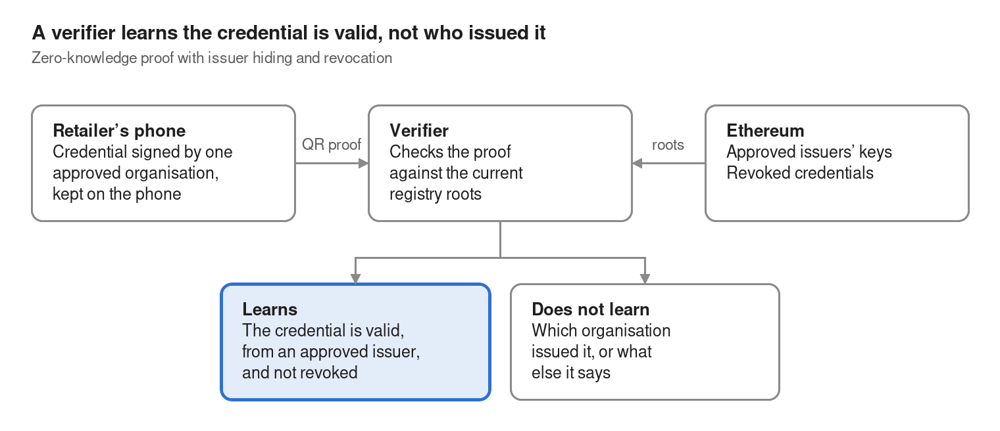
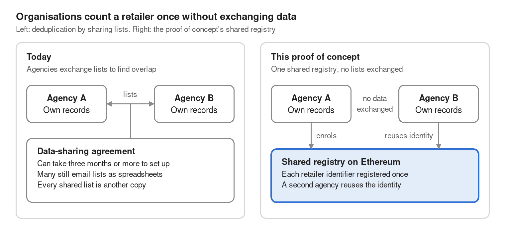
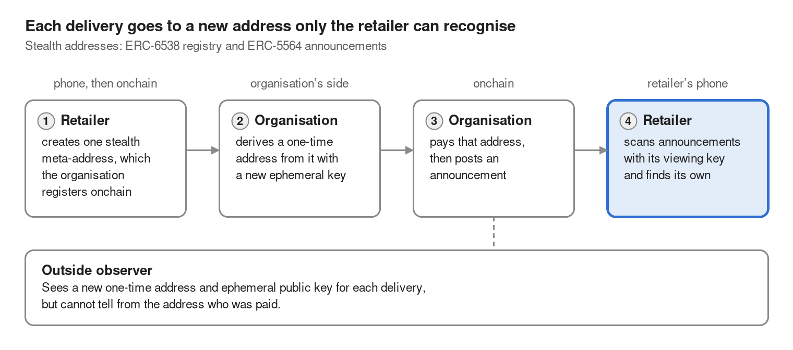
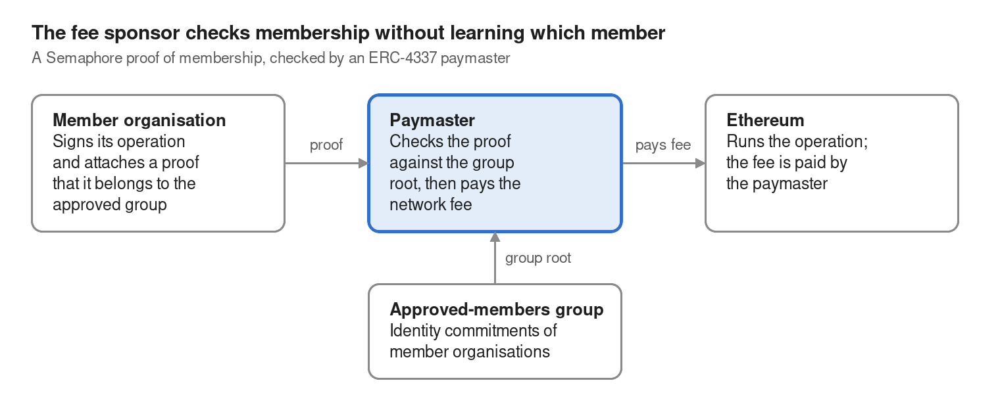
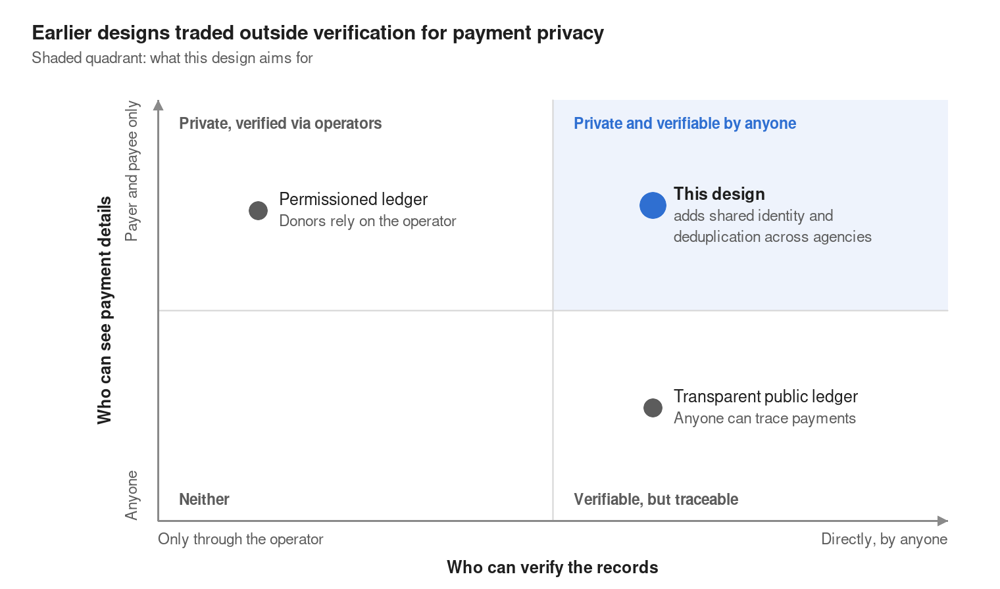

This post was kindly reviewed by Vivian Plasencia, Vikas Rushi, John Guilding, Moven Tsai, Sara, Vidushi, and Andy.
Key takeaways
- The Ethereum Foundation’s Technical Foundations team spoke with several humanitarian aid organisations to gather requirements for an assistance coordination network.
- When multiple humanitarian organisations provide aid in the same locale, each needs to avoid providing unintended duplicated payments to beneficiaries, whilst still respecting data sovereignty.
- Until recently, blockchain designs traded one property for another: public ledgers let anyone verify payments but also let anyone trace them, and permissioned ledgers keep data private but depend on trusted operators, which reintroduces the single point of trust and failure that a shared ledger was meant to remove.
- Decentralised identity with credentials stored offchain, paired with privacy-preserving payments on public blockchains, is a pattern we expect many institutions to need.
- This proof of concept’s components are built to be reusable, as described in the three companion technical articles:
- Regulation, procurement rules, data-protection review and operational readiness will set the limits and pace of adoption more than the technology will. Personal data stays offchain by design, first to protect the people being served, and also because data-protection laws such as the EU’s GDPR require care with what is disclosed on a public ledger.
A shop in a refugee camp
In a grocery shop in Zaatari, the largest camp for Syrian refugees in Jordan, a woman pays for her family’s food without any money changing hands. The shopkeeper’s terminal confirms via an iris scan that she is entitled to assistance this month and what it may be spent on, then approves the purchase. The shop is paid weeks later, by bank transfer. Behind this exchange, repeated across refugee camps and towns by many organisations, is a permissioned blockchain.
Over the past fifteen years, where markets still function, the humanitarian sector has moved from handing out food rations towards transferring cash and vouchers. Cash and vouchers now make up about a fifth of humanitarian assistance, US$7.3 billion in 2025. They are cheaper to deliver, let families decide what they need, and keep local economies alive.
The shift has created a stronger need for effective coordination and responsible deduplication: when several agencies give cash in the same place, each needs to know what a household has already received and what still needs to be distributed. Research published by the IFRC in 2023 found estimates of duplicate cases up to 15%. In Ukraine alone, deduplication across agencies saved an estimated US$207 million in cash payments by the end of 2024. That saving matters more each year, official aid from major donor countries fell 23.1% globally in 2025, its lowest funding in a decade.
Checking for overlap also means sharing data about people. Practitioners told the DIGID researchers that a data-sharing agreement between agencies could take four months or more to set up and put into operation, and a “number of organizations still rely on emailing spreadsheets and other insecure methods”. The ICRC and Privacy International warned in 2018 that the sector’s growing use of digital and mobile technologies “creates records that can be accessed and misused by third parties”.
Seeking Real World Requirements
Our team had conversations with several humanitarian aid organisations, which helped us understand how their systems work in the field and the limitations they face in practice. In particular the people it serves; the user flows that connect them; and the constraints common in humanitarian work, such as a beneficiary with no phone, a place where a cash economy cannot exist or a registration carried out offline in a refugee camp. The Technical Foundations team brought together a working knowledge of privacy on Ethereum: private transactions, zero-knowledge cryptography and the standards that define them to address these open problems.
For our engineering team, it was an education in why design thinking and systems thinking matter here more than anywhere else. Reliability is critical because disruptions to humanitarian systems can affect people’s timely access to assistance. Humanitarian organisations often build infrastructure that is meant to be temporary, operating it through a crisis and handing it, years or decades later, to a stabilised government. Designing for that handover from the start means the protections people relied on can survive a change in who governs.
This proof of concept takes into account a set of defined constraints, among them that no personal data is written onchain and that individual users do not pay network fees. We purposefully began with a narrow scope, building for retailers who have access to low-end mobile devices, whilst designing the system to extend later to self sovereign beneficiaries.
Building a proof of concept
Our objective was to demonstrate that organisations can coordinate as equals on a public ledger while protecting the people they serve, by pairing decentralised identity credentials offchain with private payment rails onchain.
Our proof of concept combines Ethereum technologies that serves six key user flows:
- The retailer registers by generating keys on their phone, which gives them a pseudonymous network identifier, an ID that does not reveal their name.
- An approved organisation issues the retailer a credential attesting that the shop is an approved retailer. The credential is issued offchain, stays on the retailer’s phone and can be shown as a QR code containing a zero-knowledge proof.
- The network member’s server sends the onchain transaction to register users against a stealth meta-address, a public key from which one-time payment addresses are made. A bundler submits the transaction using the paymaster so the retailer pays no fee, each identifier can be registered only once.
- The organisation announces a delivery to the retailer’s stealth address. The address is created fresh for each payment, so an outside observer cannot tell from the address who was paid. The fee for the organisation’s own transaction is paid by a paymaster, which accepts an anonymous proof of membership.
- The indexer detects the announcement using a viewing key that only the retailer holds. Only the retailer and the organisation serving them can connect eligibility to delivery.
- The credential issuing organisation can revoke a credential. A second organisation that enrols the same retailer reuses the existing identity instead of creating another, so the retailer is counted once without the two organisations exchanging data.

Figure 1. Ethereum holds only the shared registries, delivery announcements to one-time addresses and the fee sponsor. Numbers match the six user flows above.
Humanitarian data has been exposed before: in January 2022, the International Committee of the Red Cross found that attackers had compromised personal data on more than 515,000 highly vulnerable people, including missing persons, their families and detainees. This is why it is critical that the protocol design keeps names, birth dates and biometrics offchain and shows pseudonymous records only to approved members. Ethereum holds only registries, delivery announcements to one-time addresses, commitments and the fee sponsor. The shared registries behind all six steps are governed by a majority of the member organisations, with no single owner and no central override.
The design follows the principles of self-sovereign decentralised identity. The retailer generates and holds its own keys, and its credentials sit on its phone instead of in an agency’s database, so the retailer decides when to present a credential and to whom.
The same principles make the system interoperable across agencies. Credentials are checked against shared onchain registries instead of against an issuer’s private system, so a credential issued by one agency can be verified by any other member, or by a third party such as a clinic or a shop, without a bilateral integration or a data-sharing agreement.
The proof of concept is currently deployed on Sepolia, Ethereum’s public test network. It has run the full cycle of issuing, registering, delivering, scanning and revoking end to end; on a mid-range Android phone benchmarks demonstrated a credential proof in 1.9 seconds.
How the components work
Four mechanisms carry the privacy properties described above: credential checks that hide the issuer, a shared registry that counts each retailer once, one-time payment addresses, and anonymous fee sponsorship.
Credential checks that hide the issuer

Figure 2. Credential checks that hide the issuer.
The verifier checks the retailer’s proof against the current registry roots on Ethereum. It learns that the credential is valid, comes from an approved issuer and has not been revoked, and nothing about which organisation issued it.
Registering a retailer

Figure 3. Counting a retailer once.
Today, checking for overlap often means a data-sharing agreement and an exchange of lists. In the proof of concept, a second organisation that enrols the same retailer finds the retailer’s identity in the shared registry and reuses it, so no lists change hands.
Private payments with stealth addresses

Figure 4. Private payments with stealth addresses.
The retailer creates one stealth meta-address, which the organisation registers on-chain. For each delivery, the organisation derives a fresh address from it and announces the payment. The retailer’s wallet finds its deliveries with a viewing key only it holds, and an outside observer cannot tell from the address who was paid.
Anonymous fee sponsorship

Figure 5. Anonymous fee sponsorship.
The member organisation attaches a zero-knowledge proof that it belongs to the approved group. The paymaster checks the proof against the group’s root and pays the fee, without learning which member sent the operation.
Future work
Cost is a key concern, and at the scale with millions of transactions a month, it will determine whether the design will be viable. On 30 October 2026, a simple transfer on Ethereum mainnet cost about US$0.01 or less. Alongside the build, we benchmarked the cost of running the system on Ethereum. We did some initial exploration on gas optimization, options include:
- Batching many operations into one transaction
- Using Ethereum’s cheaper data storage
- Settling routine balances offchain while anchoring their integrity onchain
- Verifying one proof for a whole batch of operations instead of one per operation
- Experimenting with folding schemes, which let one proof cover many steps of a computation (incrementally verifiable computation, or IVC)
A more in depth evaluation on their trade-offs in complexity, to lower the cost per delivery, is work for the next phase.
The design assumes retailers have access to a phone that can hold a key, generate a proof and record consent. Many refugees own no phone or share one with their household. UNHCR data from 2016 found refugees 50% less likely than the general population to have an internet-enabled phone, and 29% of refugee households had no phone at all. Serving them means an organisation (or delegate) is required to hold custody of an account on a person’s behalf, and that raises questions the proof of concept does not answer. How does a system remain self-sovereign, for someone who cannot hold their own keys? How does an organisation hold custody for someone without becoming the single point of censorship? We have proposed an initial design and specification for delegated users. Account recovery and meaningful consent will be the hardest parts of the next phase, along with upgrading these cryptographic components for quantum resilience.
Designing a coordination system at scale is a substantial technical undertaking, but a larger one lies outside the code. Meeting requirements of different jurisdictions, data-protection offices, procurement frameworks, and internal policies that govern a humanitarian organisation is no trivial pursuit. This, we anticipate, will be the greatest barrier to adoption.
More than 800 million people worldwide have no official proof of identity, according to the World Bank. We hope that the coordination network could support uses well beyond the coordination of aid, such as health and vaccination records carried between medical centers, education qualifications proved across borders and refugee status without a government-issued identity document. It could also open access to DeFi savings, small loans and stablecoin payments. A potential list of use-cases is a part of the project documentation. There is much in the current design that we hope to improve with partners.
Advantages of a public network
An organisation’s interest in a public network rests on three key points.
- Collaboration and efficiency: on a shared, interoperable public network, other organisations can take part as co-owners without running infrastructure of their own or relying on another agency’s. Greater access to liquidity and secondary applications increase operational efficiency.
- Cost: leveraging a public blockchain network means that the operator would no longer have to carry the cost of running node infrastructure for a private network.
- Neutrality and the advantages of digital public infrastructure: a public network offers censorship resistance, meaning no single party can block a valid transaction, and verification that does not depend on trusting an operator.
Earlier designs in blockchain deployments for humanitarian assistance have mostly followed one of two patterns. In the first pattern, one agency or a small consortium operates a permissioned ledger. Data stays out of public view, outsiders such as donors verify records through the operators. Permissioned networks outside the sector show how that dependence plays out. Maersk and IBM announced in November 2022 that they would withdraw the TradeLens shipping platform and take it offline in 2023. The Sovrin Foundation, which governed a public-permissioned identity network, was dissolved in May 2025.
In the second pattern, payments run on a public network. Since 2019, aid programmes have paid people and retailers on Ethereum. An open-source aid-distribution platform first piloted on a permissioned network in Nepal now runs on Base, an Ethereum L2. Private and permissioned chains were the sensible choice for early humanitarian deployments: public networks could not yet deliver the throughput, low cost or privacy those programmes needed. On Ethereum, all three have since improved substantially.

Figure 6. The trade-off between outside verification and payment privacy.
A permissioned network, however well run, is a closed room in which value moves only between the parties already present. On Ethereum, the people and organisations such a system serves would be connected to greater liquidity and the applications already running.
During 2025 the gas limit doubled, from 30 million to 60 million, so each block can now hold roughly twice as many transactions. Several major standards have matured in Ethereum’s open standards process: ERC-4337 for account abstraction, ERC-5564 and ERC-6538 for stealth addresses. Smart accounts have since processed more than 1.3 billion operations across Ethereum and other EVM-compatible networks.
Privacy has also become an explicit priority for the Ethereum Foundation. Ecosystem teams have delivered privacy focused technologies through libraries and projects such as Semaphore, Anon Aadhaar, Kohaku and Privacy Pools.
Ethereum’s has never had a full chain halt since its launch on 30 July 2015. About 815,000 active validators secure the network, the community maintains five execution clients and six consensus clients, developed by different teams in different programming languages, and about 11,700 nodes were publicly visible on 30 October 2026. A system built on Ethereum would also inherit the protocol’s upgrades, security fixes and migration to post-quantum cryptography. The Ethereum Foundation’s Protocol cluster is aiming for Ethereum’s layer 1 to be quantum-resistant across execution, consensus and data by December 2029.
Institutions and the people they serve tend not to trust infrastructure they cannot inspect, cannot leave and do not control. One way to earn that trust is to build infrastructure that no single entity owns, and to hold it to four properties the Ethereum ecosystem calls CROPS: censorship resistance, open source, privacy and security. We believe Ethereum meets these properties better than the alternatives we examined, though still imperfectly.
This work sits within a larger effort at the Ethereum Foundation to show how Ethereum can serve as digital public infrastructure, a shared, interoperable layer for identity, payments and data exchange. The protocol we worked on is a small-scale version of the problem governments face: it is the same shift that ministries, agencies and private providers must make when they come to rely on common, public systems.
Working with us
The Ethereum Foundation’s Technical Foundations team works with governments, multilaterals and other institutions that want to understand whether Ethereum can serve as part of their infrastructure. We act as a technical advisor and builder of reference implementations: we help define requirements, write specifications and threat models, carry out technical due diligence, build proofs of concept and bring in expertise from across the Foundation and the wider ecosystem. We do not operate production systems, sell anything, or recommend vendors. A typical engagement may include a workshop to understand the problem, writing specifications, building a proof of concept, and a pilot.
If your organisation would like to explore Ethereum public good use cases, we would love to hear from you at epic@ethereum.org.
Code and Documentation
This opensource repository holds the contracts, circuit, libraries, reference wallet, specifications and threat model under the MIT licence. It has not been externally audited. Three companion technical articles go deeper:
- Semaphore Paymaster: Private Transaction Sponsorship
- Private Credential Verification with Issuer Hiding and Revocation
- Benchmarking Zero-knowledge Credential Proofs on Low-end Mobile Devices
References
- Coordination network, code repository and documentation, contains contracts, circuit libraries, reference wallet, specifications, threat model and usecases
- ALNAP, The State of the Humanitarian System 2026, chapter 2: Cash, September 2026: cash and voucher assistance at 21% of humanitarian assistance and US$7.3 billion in funding in 2025, from CALP Network data.
- CALP Network, Van Der Merwe and Sadik, Show Me the Money: Efficiency and Effectiveness in Humanitarian Response, May 2026: share of programme budgets reaching people as transfers, weighted by programme size.
- IFRC for the DIGID consortium, Use Case 1: Deduplication of people, families or households, 2023: organisations providing cash in one country, estimates of duplicate cases, time to set up data-sharing agreements.
- IFRC for the DIGID consortium, Investigating Safe Data Sharing and Systems Interoperability in Humanitarian Cash Assistance, 2023: spreadsheets shared by email, few organisations hosting ledger nodes, the burden of recipient-managed data requests.
- OCHA, Ukraine CWG Data Management: Systems and Governance Assessment Report, July 2025: 63 partners in deduplication; US$207 million saved by the end of 2024.
- OECD, International aid fell sharply in 2025, 9 April 2026, and its preliminary data note: falls of 23.1% in aid and 35.8% in humanitarian aid.
- UN News, Humanitarians launch $33 billion appeal for 2026, 8 December 2025, and OCHA, Global Humanitarian Overview 2026: 2025 funding and 2026 appeal figures.
- ALNAP, The State of the Humanitarian System 2026, chapter 2: Digital delivery and risks, September 2026: inter-agency data sharing as “a persistent gap”.
- ICRC and Privacy International, Digital trails could endanger people receiving humanitarian aid, ICRC and Privacy International find, 7 December 2018.
- ODI Humanitarian Policy Group, Coppi and Fast, Blockchain and distributed ledger technologies in the humanitarian sector, February 2019: most projects on private, permissioned platforms.
- EIP-1: EIP Purpose and Guidelines: Ethereum’s open standards process.
- ERC-4337: Account Abstraction Using Alt Mempool and the original EntryPoint contract on mainnet, deployed February 2023: the paymaster model.
- ERC-5564: Stealth Addresses and ERC-6538: Stealth Meta-Address Registry, proposed in 2022 and 2023: the delivery mechanism.
- BundleBear, ERC-4337 overview, accessed 31 October 2026: operations processed across EVM-compatible networks.
- Ethereum Foundation, Checkpoint #6, October 2025, and Protocol Priorities Update for 2026, February 2026: gas limit from 30 million to 60 million; eightfold increase in theoretical blob capacity.
- Ethereum Foundation, The Ethereum Foundation’s Commitment to Privacy, 8 October 2025.
- Semaphore: anonymous proofs of group membership.
- ACAPS, Implications of financial blockages in Sudan, 11 August 2023.
- IASC, Operational Guidance on Data Responsibility in Humanitarian Action, second edition, April 2023.
- Massimo Marelli (ed.), ICRC, Handbook on Data Protection in Humanitarian Action, third edition, chapter 15: Blockchain, Cambridge University Press, 2024.
- ICRC, Sophisticated cyber-attack targets Red Cross Red Crescent data on 500,000 people, 19 January 2022.
- Maersk, A.P. Moller - Maersk and IBM to discontinue TradeLens, a blockchain-enabled global trade platform, 29 November 2022.
- Sovrin, The Sovrin Foundation has been dissolved, but Sovrin MainNet remains, 20 January 2026.
- UNICEF Venture Fund, Mid-Investment Update: How Rumsan is Transforming Digital Humanitarian Aid for Disconnected Communities, 11 December 2024: source for the platform now on Base.
- Mercy Corps Ventures, The Future of Digital Aid: Integrating Privacy and Stablecoins for Displaced Communities in Colombia, 20 April 2026: source for the Colombia pilot.
- ethereum.org, Why build on Ethereum, May 2026, and Prysm, mainnet postmortems: no full chain halt since 2015; the May 2023 finality incidents.
- Beaconscan and Etherscan, node tracker, accessed 30 October 2026: validator and node counts; EIP-7251: validators controlled by a single entity; ethereum.org, Nodes and clients: client implementations.
- Etherscan, gas tracker, accessed 30 October 2026, and Ethereum Foundation, Fusaka mainnet announcement, November 2025.
- UNHCR, Connecting Refugees, September 2016.
- GSMA, The Digital Lives of Refugees: How displaced populations use mobile phones and what gets in the way, July 2019.
- UNHCR and Ethiopia’s Refugees and Returnees Service, Access and barriers to digital connectivity for refugees and host communities in Ethiopia, November 2025.
- Access Now, Rising and resisting in the darkness: internet shutdowns in 2025, 31 March 2026.
- CALP Network, The State of the World’s Cash 2023, chapter 7: Data and Digitalization, November 2023.
- UN Innovation Network, From weeks to minutes: a blockchain lifeline for Nepal’s families, 26 February 2026.
- Ethereum Foundation, The Promise of Ethereum: Introducing the EF Mandate, 13 March 2026: CROPS and the line that these properties “must never be traded away for convenience”.
- World Bank, Global progress in identification: 3 findings from the latest data, 30 October 2025.
- Ethereum Foundation, Post-Quantum Ethereum, updated June 2026: timeline estimate from the Foundation’s post-quantum team.
- Regulation (EU) 2024/1183 (eIDAS 2.0) and its corrigendum of 9 April 2025: Article 5a(16)(b) on unlinkability.
- European Commission, EUDI Wallet Architecture and Reference Framework, section 7, and its discussion paper on zero-knowledge proofs.
- Wang, Lueks, Sukaitis, Graf Narbel and Troncoso, Not Yet Another Digital ID: Privacy-Preserving Humanitarian Aid Distribution, IEEE Symposium on Security and Privacy, 2023.
- UNDP, UN Releases Universal DPI Safeguards Framework to Promote Safe and Inclusive Digital Public Infrastructure, 24 September 2024.